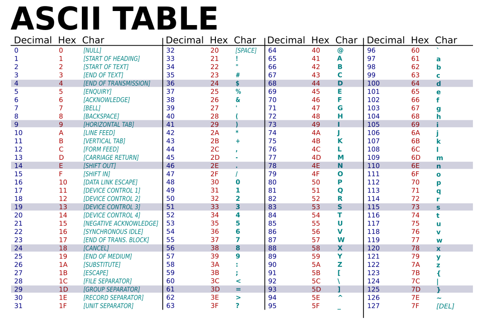

Computers only understand 0s and 1s. That is pretty swell when working with integers because the numbers do not really change when the base changes, only how they are represented.
For example 149 looks like 1001 0101 in binary (base 2), 95 in hexadecimal (base 16), and 225 in octal (base 8).
This is great and all, but letters are not quite exactly numbers, but you can easily assign a number to each letter (A to 1, Z to 26).
Suppose I wanted to give each letter a number how many numbers would I need.
At the minimum you would need 26 for the alphabet, but this is only one case of letters (ABCD....Z). What about the lower case?
Well then you now need 52. Now you might have noticed that we have a lot more than 52 symbols for writing.
Including all of punctuation marks this brings the total to 95.
The smallest number of bits that can store all this information is 7, giving up to 128 options for letters.
But computers generally do not like odd numbers so the smallest number of bits that a computer can handle is 8, giving 256 options for letters.
Thus we now have the size of a character to a computer.
Like English computers need to have their own alphabet that they all agree on. This is where ASCII (American Standard Code for Information Interchange) comes into play.

This is the alphabet for computers.
Now about words.... well what is a word but a list of characters?
So the word "word" is nothing more than a list of 4 characters that contains the characters 'w', 'o', 'r', and 'd'.
This is what we call a string. There's more technicality to them, but this is just the basics.